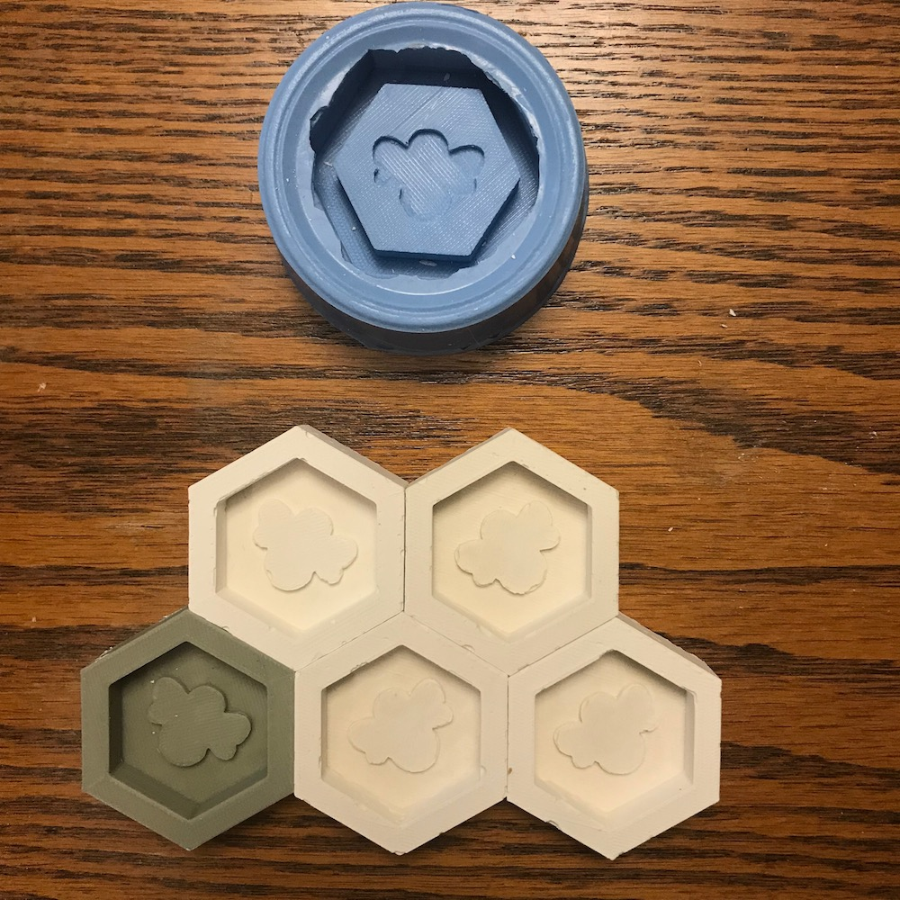
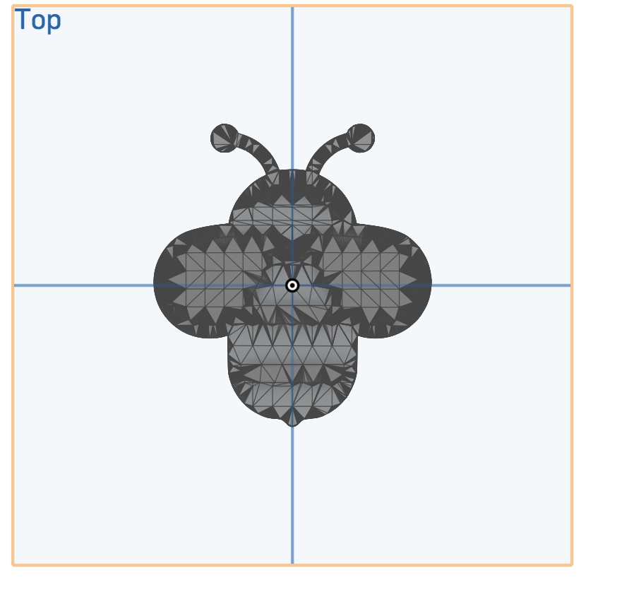
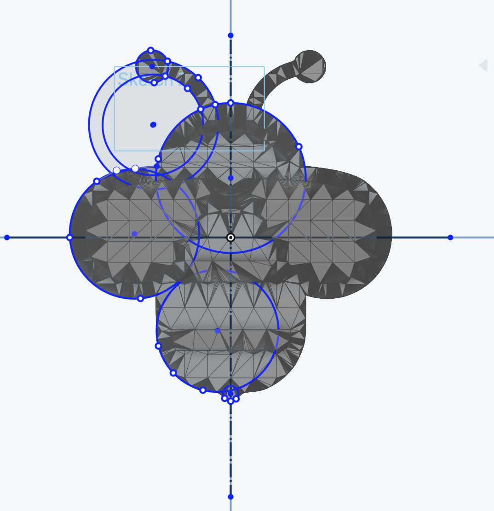
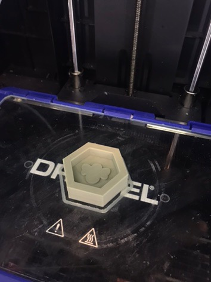
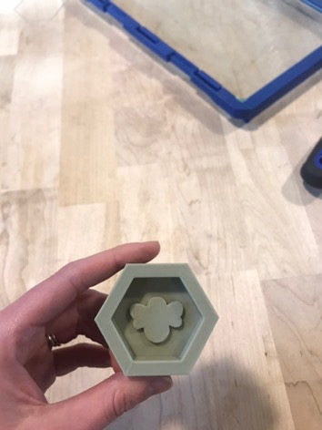
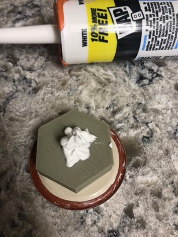
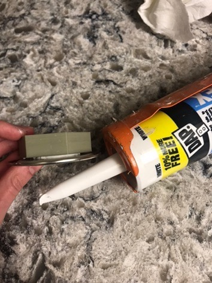
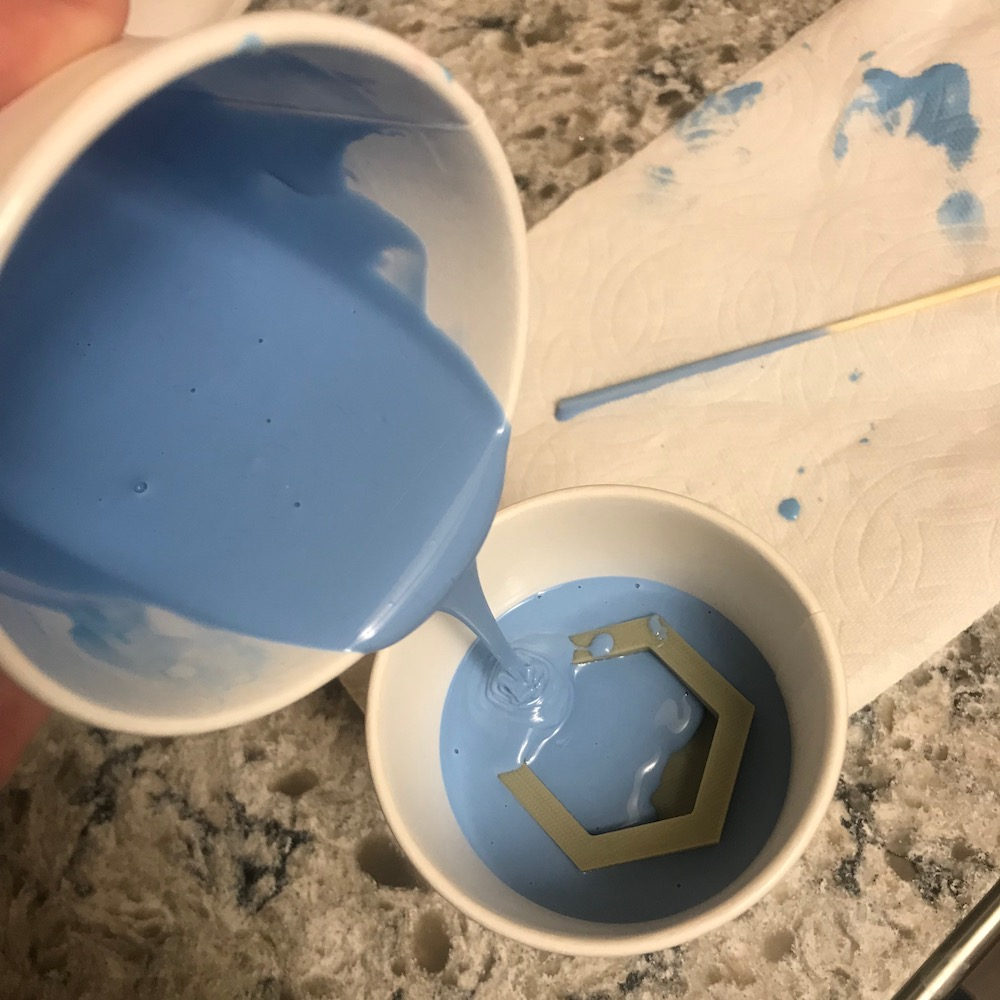
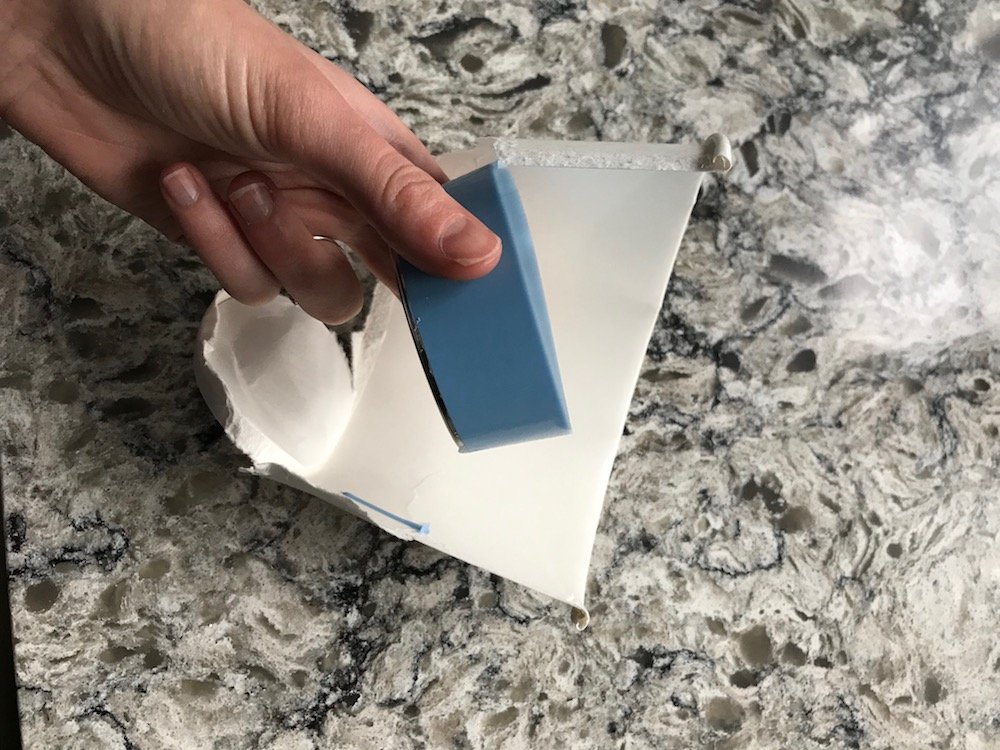
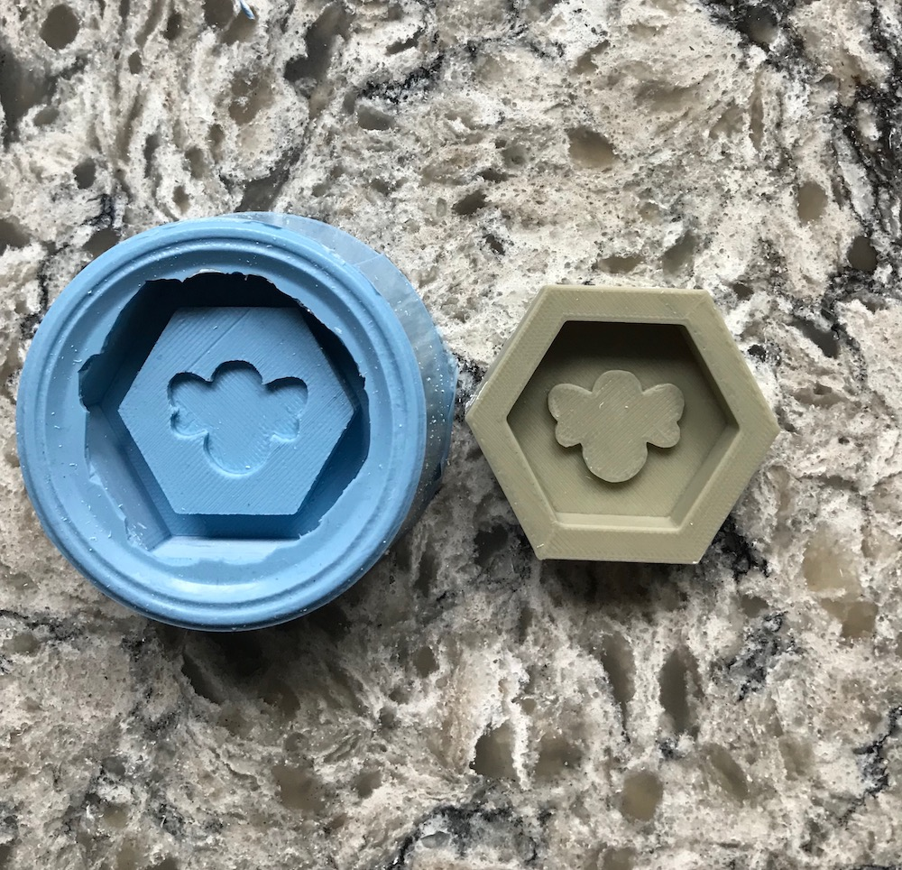

A6: Molding & Casting

This assignment was to create a mold for a mold via either 3d printing or milling, then to make a silicone mold and 4 casts from that mold with plaster.
CAD Modeling & Milling Prep
I started this assignment by modeling in OnShape. I decided to make a hexagon shape with a bee inside, so that the multiple casts can be put together and make a honeycomb.
I found this .stl file of a bee on Thingiverse. However, I wanted to use OnShape (just a personal preference over Rhino), and I realized that OnShape does not work well with meshes. It will show the mesh, but it will not allow you to work with it and integrate it with other parts. To fix this, I remade the shape as a Sketch that got close to the original face of the mesh.
 Creating a sketch in OnShape based on an stl file from Thingiverse.
Toolpaths
I created toolpaths using the Manufacture features in Fusion 360 and exporting the gcode, and importing that into the Bantam Tools software. Using 1/8 inch bit did not provide enough fidelity to be able to see the bee shape, although Bantam said it would take a reasonable 30 minutes. Using a 1/16 inch bit made the bee shape much clearer, but said it would take 2.5 hours. Because of this, I decided to find a simpler bee shape that could still be clear when milled with 1/8th inch bit.


Using a larger bit meant that the bee shape would not appear correctly. Using a smaller bit gave more fidelity, but would take 2.5 hours to mill.
I found another, simpler bee shape in an OnShape public link and used that. This shape was simple enough to show up well with a 1/8 inch bit and would take only about 30 minutes to mill.

Pivot to 3D Printing
When I arrived at Fluke on Sunday and realized that the machinable wax block I had did not fit in the Othermill, I decided to switch to 3D printing, which ended up working well for me. I used the same stl file and imported it into the Dremel printer software. Miraculously, my 3D print came out great on the first try with no problems, and only took about 35 minutes. Yay!
 Silicone Mold
To make the silicone mold, I used the recommended SmoothOn kit. I wanted to use a paper cup, but my shape did not fit on the bottom of it, so I created a bottom using a lid from a jar. I glued the piece down after getting a tip from Julie Do that the piece might float up in the plaster if not secured down. I used caulk to do this, since that's what I had on hand at home.
 I held down the bottom of my mold with caulk.
I left the silicone overnight, and it came out great with no problems.
 Casting Plaster
I used Plaster of Paris to cast my molds. On the first try, I followed the directions (or so I thought) and took it out after 1 hours, but it was still not dry at all and broke apart.

On my next try, I was more careful with the ratios (2:1, plaster:water) and left it overnight, so it dried well. However, this piece had a lot of air pockets. Thanks to Jose who gave me some tips on how to get rid fo the air pockets - pour slowly and tap on the mold after it's poured.
This worked well, and I made 4 more casts with no issues.
Thanks
Thanks to Julie T Do, Krista, and Nitya for pointing me towards the 3D printing route, which ended up working well, for Andrew Waer for posting on Slack about how to avoid scaling issues when importing into Fusion 360, which I'm sure saved me a ton of time.
Source Files
- OnShape file of shape